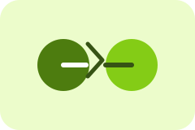

Pruebas unitarias
Significado: Validan funciones o módulos pequeños para comprobar que cada parte del sistema funciona de forma aislada y correcta.
Gestión de pruebas
La gestión de pruebas es el conjunto de actividades para planear, diseñar, ejecutar, supervisar y reportar la validación del software para asegurar calidad, seguridad y continuidad.
Pantalla de inicio
En esta pantalla se visualiza la importancia de controlar cada etapa de validación: identificar riesgos, diseñar pruebas, ejecutar verificaciones y confirmar que el producto está listo para liberarse con seguridad.
Significa organizar de forma estructurada cada prueba que valida si el software cumple con los requisitos, funciona correctamente y puede entregarse con confianza. Esto incluye revisar riesgos, priorizar casos, ejecutar pruebas y analizar resultados antes de la liberación.
Significado: Validan funciones o módulos pequeños para comprobar que cada parte del sistema funciona de forma aislada y correcta.
Significado: Comprueba que varios módulos o servicios interactúan correctamente cuando se conectan entre sí.

Significado: Asegura que cambios recientes no hayan roto funcionalidades que ya estaban funcionando antes.
Significado: Evalúa la velocidad, estabilidad y capacidad del sistema bajo carga para detectar cuellos de botella.
Significado: Determina cómo responde el sistema cuando se somete a niveles altos de tráfico o uso simultáneo.
Significado: Mide si la aplicación es clara, cómoda y fácil de usar para las personas que la utilizan.
Significado: Revisa la lógica interna del software para analizar decisiones, rutas y condiciones del código.
Significado: Evalúa la funcionalidad del sistema desde la perspectiva del usuario, sin ver su estructura interna.
Una buena gestión de pruebas ayuda a detectar errores a tiempo, reducir riesgos, optimizar tiempos de entrega y garantizar que la aplicación llegue al usuario con mayor calidad y confianza.